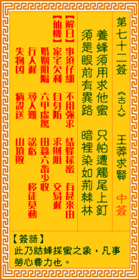

观音灵签第七十二签 【王莽求贤】 |
 | |||
弄蜂须要求他蜜 犹恐遭他尾上针 虽是眼前无异路 暗里深藏荆棘林 |
||||
| 【吉凶】 | 下下签 | 【宫位】 | 辰宫 | |
| 【签语】 | 此卦結蜂采蜜之象。凡事勞心費力也。 （此卦求甜得苦之象。凡事防範災殃也。） | |||
| 【解曰】 | 雷事須仔細。不用強求。結蜂采蜜。有甚來由。 | |||
| 【仙机】 | 此签家宅欠利，自身防，求财阻，交易遲，婚姻阻隔，六甲虛驚，行人遲，田蚕少收，六畜少收，寻人难，讼亏，移徙莫动，失物凶，疾病設送 ，山坟败。 | |||
| 【详解】 | 取蜂的原因是为了得到蜜汁，但还是担忧会遭其尾刺所伤;即使表面上看去仍有不同的途径或方法，谁知暗地里却仍然布满了荆棘。 事须仔细，不可强求，如蜂采蜜，着其由来。 本签示之于弟子曰。事须仔细不可强求如蜂采蜜着其由来。事后遂意。皆祖宗积德之所致。若能顺理而行。益加 倍植。则天之报施。凡事先苦后甘之象。必须忍耐。否则无由成功。由忍一字。将有转凶化吉之时。 此签有”寄人篱下”之意。意味当事人，凡事忍耐则吉。我们常常有”人在屋檐下”之叹，总觉得抱负无法伸张、或不得不为某些情况折腰。但所谓”山不转路转 ，路不转人转”，其实很多时候只要换个角度、逆向思考，心境就能改变。在现实环境受限、不允许大幅度改变时，不妨忍一时，勿在此刻做下任何草率冲动的决 定。保持乐观轻松的心情，而不是轻易地被环境或人事所影响。坚守岗位、做好份内之事，相信必有时来运转之日。 | |||
| 【典故】 | ◇王莽求賢 西漢時的王莽家族，可以說是豪門世家。他父親雖然早死，但他的幾個伯父、叔父在漢成帝時，一個個出將入相、封侯受賞，王氏一門可謂顯赫至極。 但王莽本人的小家庭卻是寒微之極；父親早逝，只與母親相依為命，靠親戚周濟生活。但也因為如此，讓王莽從小就養成、練就成了一套為人處世的本領。無論心中多麽難過或氣惱，但在親戚長輩或外人面前，他都表現出十分愉悅、平和的樣子，因此頗爲宗族中眾人賞識。 有一次，他的大伯父病重，他得知後跑來，守候在病人床前，端藥送水，守夜看護，一連幾個月衣不解帶，蓬頭垢面、惟悴不堪，簡直比病人還「病人」，比親兒子還「親兒子」。 對此，台族上下無不誇讚，紛紛上書，爲他請求封賞。 於是漢成帝封他一個新都侯稱號，並命他任宮中侍衛，成了皇帝身邊一位近臣。 地位高了，權力大了，但王莽從不露出半點驕矜懈怠神色，反而益發謙恭有禮，一方面廣為結交公卿將相、名士大儒，一方面又賑濟窮貧、輕財好施。 而自己生活卻十分儉樸，常常吃葷菜，更不穿長袍大袖的禮服，只一身短打扮。於是朝野眾人一致以一個「賢」字稱讚他。 後來，他的叔父、大司馬王根病逝，臨終舉他以代。皇帝及眾大臣都認爲他最適當不過。於是，才僅僅三十八歲的王莽，便做了掌握全國最高軍權的大司馬。 | |||